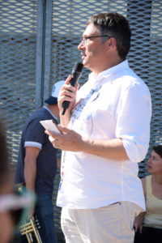
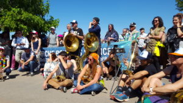
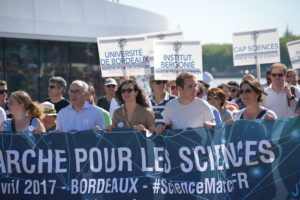
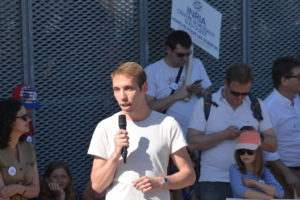
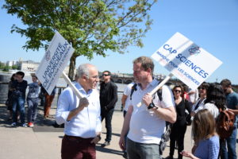
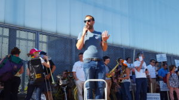
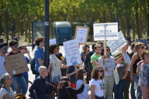
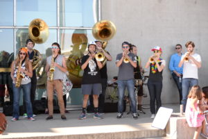

Retour sur… la marche de 2017
LE 22 AVRIL 2017, ON A MARCHE POUR LES SCIENCES

Partout dans le monde, dans plus de 600 villes des 5 continents, des défilés ont été organisés pour défendre les sciences et la démarche scientifique. A Bordeaux, nous étions 700 à défiler.
Partie des États-Unis et liée aux positions antisciences de Donald Trump, la marche s’est étendue à l’international. « La montée en puissance de la post-vérité et des « fake news » ne se limite pas aux États-Unis » indique Olivier Le Gall, chercheur à l’Inra et président de l’Office Français de l’Intégrité Scientifique pour préciser le mot d’ordre de la marche : « Une opinion n’est pas un fait, il ne faut pas confondre. La démarche scientifique fait toute la différence, elle établit des faits à l’épreuve de vérifications successives. C’est une œuvre humaine qui présente des failles, comme toutes les œuvres humaines, mais elle est aussi fiable que possible ».
Au rythme de la banda « Los Téoporos », la marche a été ponctuée de « haltes » pendant lesquelles des prises de paroles, notamment par les doctorants bordelais, ont illustré ce mot d’ordre.
Retour sur la manifestation bordelaise
Pourquoi marcher pour les sciences ?
Le message de Pierre Dos Santos
(Vice-Président en charge de la recherche,
Université de Bordeaux)
La science n’est pas une opinion. La Marche pour les Sciences qui nous réunit aujourd’hui est une réaction et une réponse mondiales aux multiples positions antisciences qui pervertissent nombre de débats publics pourtant essentiels pour notre avenir. Il est de notre devoir à tous de défendre la méthode scientifique face aux idées préconçues et lorsqu’elle questionne les fausses évidences, de défendre la culture scientifique et les sciences participatives, de défendre et de renforcer le dialogue entre sciences et société. Et aussi de convaincre les décideurs politiques de mieux prendre en compte les résultats scientifiques.
Les sciences, un outil d’émancipation
essentiel à la démocratie
Le message de Cédric Brun
(Philosophe des Sciences, Université Bordeaux Montaigne)
Les connaissances scientifiques ont une spécificité qui n’est partagée par aucun autre type de discours ou de savoir, c’est celle de cette capacité à produire, en même temps que les connaissances elles-mêmes, les moyens, pour chacun, de les critiquer.
Changement climatique et arctique
Le Message de Calypso Racine
(Doctorante en Sciences de l’environnement)
Sur la question du changement du climat, la science déploie des méthodes rigoureuses pour reconstituer l’histoire du climat et déterminer si la période actuelle a un caractère exceptionnel afin de dépasser les impressions, les croyances ou les intérêts partisans qui forgent les opinions.
La vaccination
Le message d’Anaïs Soula, Charline Chambrun et Thomas Pfeiffer
(Doctorants en Sciences de la vie et Neurosciences)
Le principe même de la vaccination est contre-intuitif et n’a pu être découvert que par la force du raisonnement et de l’expérimentation. L’existence et la persistance de croyances anti-vaccin illustrent que même un savoir scientifique établi peut être mis en balance avec des mouvements d’opinion.
La découverte de l’hygiène
Le message de Delphine Perriat et Corentin Segalas
(Doctorants en Santé Publique)
La méthode scientifique a non seulement permis de comprendre un phénomène pour lequel les croyances et les superstitions apportaient de mauvaises réponses mais aussi de produire un savoir qui aujourd’hui encore sauve quantité de vies.
Le principe de précaution
Le message de Daouda Ouedraogo
(Doctorant en Droit)
En tant que science, le droit permet de dégager/trouver des principes juridiques pour encadrer/répondre/anticiper des besoins émergents de la société (pollueur payeur, principe de précaution, etc.)

Valeur et richesse
Le message de Léo Charles
(Jeune docteur en Economie)
A partir d’un concept largement étudié et débattu par les chercheurs en économie, on voit comment une discipline scientifique peut proposer des indicateurs, reposant sur une définition rigoureuse, pour aider les décideurs publics à objectiver leurs opinions.

La découverte de l’EEG
Le message de Camille Jeunet
(Jeune docteure en Sciences Cognitives)
Les scientifiques eux-mêmes peuvent avoir des intuitions ou des convictions qui relèvent de l’opinion (Hans Berger et la télépathie) et l’approche scientifique permet de faire le tri pour finalement établir un savoir au service de la société.
Décrypter le complotisme
Le message d’Inès da Graça et Eleonora Lega
(Doctorantes en Lettres)
L’analyse du discours, ainsi qu’elle se pratique dans les travaux de recherche en lettres, permet de proposer une grille de lecture pour repérer des informations fausses propagées au service d’opinions partisanes.
L’informatique au service de nos handicaps
Le message d’Audrey Landuran
(Doctorante en Sciences Cognitives)
Les connaissances scientifiques sont cumulatives et en perpétuel renouvellement. Par l’interdisciplinarité, chaque jour ou presque, de nouveaux progrès sociétaux sont produits. L’histoire de l’informatique, que l’on peut faire remonter à la Pascaline du 17ème siècle, en est une illustration parlante. Actionner un membre manquant, permettre la communication des handicapés à qui il ne reste plus rien qu’un battement de cil ? Le pari est relevé et se renouvellera.
Mettre les sciences au cœur de la société
Le message de Marianela Santoyo Zedillo
(Doctorante en Sciences de la vie)
La référence à la civilisation maya permet de rappeler que mettre les sciences au cœur de la société n’est pas une utopie, mais un passé doit redevenir notre présent.

Crédits photos : Nathalie Caplet, Stéphane Decroocq